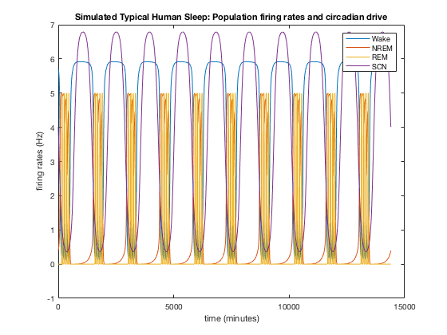
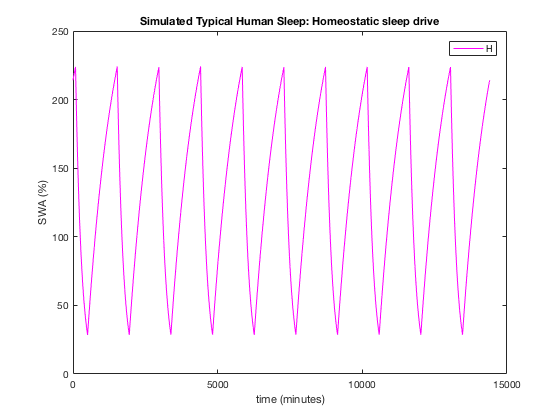

Sleep-wake regulatory network model for typical human sleep
Based on the model introduced in (Gleit, Diniz Behn and Booth, J Biol Rhythms 28:339-355, 2013) with slight revisions as in (Booth, Xique and Diniz Behn, SIAM J Appl Dyn Sys, 16(2):1089-1112, 2017).
Revisions include:
* 3 sleep and wake state promoting neuronal populations included in model network
* reduced equation form for neurotransmitter concentrations
* parameters for time constants of homeostatic sleep drive updated based on data in Rusterholz et al, SLEEP 33:491-498, 2010.
* parameters corrected in circadian oscillator model as in Serkh and Forger, PLoS Comput Biol 10:e1003523, 2014
Matlab files:
run_DinizBehnBooth_SWnetworkModel.m: this file calls the MATLAB ode solver to numerically simulate the model equations, generates figures of model variables and computes basic statistics of the simulated sleep-wake pattern, including swperiod = period of each sleep-wake cycle, sleepdurs = duration of each sleep episode, wakedurs = duration of each wake episode, REMcycle = time between onsets of successive REM sleep episodes, REMdurs = duration of each REM sleep episode, phases_sleeponsets = phase of sleep onset relative to the minimum of the circadian clock drive variable c.
DinizBehnBooth_SWnetworkModel.m: this file contains the model equations.
To simulate the model, enter the following at the MATLAB command prompt
[t,x,swperiod,sleepdurs,wakedurs,REMcycle,REMdurs,phases_sleeponsets] = run_DinizBehnBooth_SWnetworkModel;
The following two figures will be generated that show the neuronal population firing rates (Figure 1) and the homeostatic sleep drive (Figure 2) over 10 simulated 24h days.


The simulated behavioral state is interpreted as follows:
Wake = Wake population firing rate > 4 Hz
Sleep = Wake population firing rate < 4 Hz
REM sleep = REM population firing rate > 3 Hz